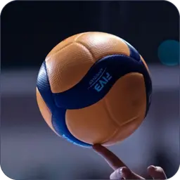

What is Volleyball?
Volleyball, a game played by two teams with usually six players on a side, is when the players use their hands to bat a ball back and forth over a high net, trying to make the
ball touch the court within the opponents’ playing area before it can be returned. To prevent this, a player on the opposing team bats the ball up and toward a teammate before it touches the court surface. That teammate may then volley it back across the net or bat it to a third teammate who volleys it across the net. A team is allowed only three touches of the ball before it must be returned over the net.
History
Volleyball was invented in 1895 by William G. Morgan, physical director of the Young Men’s Christian Association (YMCA) in Holyoke, Massachusetts. It was designed as an indoor sport for businessmen who found the new game of basketball too vigorous. Morgan called the sport “mintonette,” until a professor from Springfield College in Massachusetts noted the volleying nature of play and proposed the name of “volleyball.” The original rules were written by Morgan and printed in the first edition of the Official Handbook of the Athletic League of the Young Men’s Christian Associations of North America (1897). The game soon proved to have wide appeal for both genders in schools, playgrounds, the armed forces, and other organizations in the United States, and it was later introduced to other countries.
In 1916, rules were issued by the YMCA and the National Collegiate Athletic Association (NCAA). The first nationwide tournament in the United States was conducted in New York City in 1922. The United States Volleyball Association (USVBA) was formed in 1928 and recognized as the rules-making, governing body in the United States. From 1928 the USVBA—now known as USA Volleyball (USAV)—has conducted annual national men’s and senior men’s (age 35 and older) volleyball championships, except during 1944 and 1945. Its women’s division was started in 1949, and a senior women’s division (age 30 and older) was added in 1977. Other national events in the United States are conducted by member groups of the USAV such as the YMCA and the NCAA.
Volleyball was introduced into Europe by American troops during World War I, when national organizations were formed. The Fédération Internationale de Volley Ball (FIVB) was organized in Paris in 1947 and moved to Lausanne, Switzerland, in 1984. The USVBA was one of the 13 charter members of the FIVB, whose membership grew to more than 210 member countries by the late 20th century.
International volleyball competition began in 1913 with the first Far East Games, in Manila. During the early 1900s and continuing until after World War II, volleyball in Asia was played on a larger court, with a lower net, and nine players on a team.

box 3
This is the basics of volleyball. Click on the naviagtion pages to find out how to play.